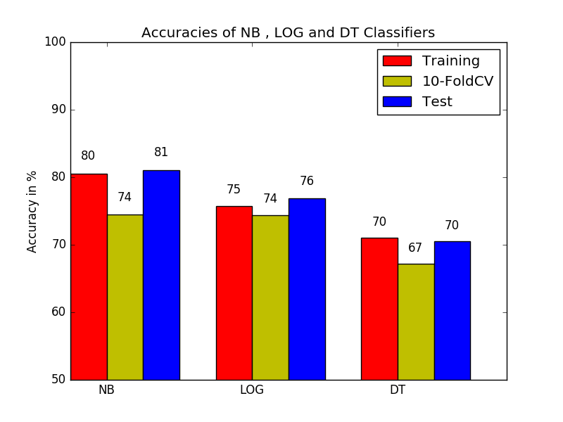
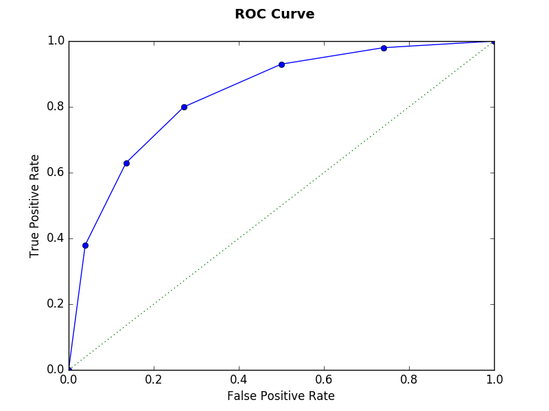

TWITTER SENTIMENT ANALYSIS (TEAM : Lakshmi Kamala Kotha -lkotha2@uic.edu , Vakkalanka V S S Dilip Raju--vvakka2@uic.edu)
1. Tweet Preprocessing Steps:
2. Feature Space:
We have decided to use unigram as a feature space as we had good accuracy on validation and test data for it than for any other feature space.
3.
Good models from each classifier that we picked to compare with each other are highlighted in bold.
Naïve Bayesian Classifier:
Built model for different values of parameter lambda.
For lambda = 0, where there is no smoothing, the model tends to overfit the training data.
For lambda >0, the model works good for any value of lambda without much significant change in their accuracies.
When Feature space is taken as bigram, the model doesnot fit well with training data.
Accuracies for Naïve Bayesian with different lambda values on unigram feature space are
Lambda = 1, Training Accuracy =80.56%, Test Accuracy = 81.05%
Lambda = 5, Training Accuracy =78.6%, Test Accuracy = 79.9%
Lambda = 10, Training Accuracy = 77.7%, Test Accuracy = 79.6%
Lambda = 50, Training Accuracy = 75.8%, Test Accuracy = 79.38%
For Bigram Feature Space:
Lambda = 1, Training Accuracy=81.9%, Test Accuracy = 57.6%
Lambda = 3, Training Accuracy=81.1%, Test Accuracy = 58.2%
Logistic Regression Stochastic Gradient with regularization:
| Regularization Parameter | Regularization Type | # of iterations | Training Accuracy | Test Accuracy |
| 0.01 | L2 | 100 | 75.72 | 76.88 |
| 0.01 | L2 | 80 | 75.55 | 76.88 |
| 0.02 | L2 | 100 | 75.65 | 76.88 |
| 0.02 | L2 | 130 | 75.84 | 76.63 |
| 0.01 | L1 | 100 | 66.35 | 70.75 |
| 0.02 | L1 | 100 | 63.18 | 65.73 |
| 0.03 | L1 | 100 | 61.13 | 61.28 |
Training accuracy for Logistic Regression with stochastic gradient with L2 regularization for bigram feature space is around 78% and accuracy on test set is 66%.
Training accuracy for Logistic Regression with stochastic gradient with L2 regularization for unigram feature space is around 75.7% and accuracy on test set is 76.8%.
Training accuracy for Logistic Regression with stochastic gradient without regularization for unigram and bigram combined feature space is around 77% and accuracy on test set is 60%.
If regularization parameter is increased more than 0.05, then it has become very large as the model doesnot fit well.
Comparing different models, we found unigram feature space fits better for the data as it shows good accuracies on both training and test data.
L2 regularization fits the data well than L1 regularization.
we found with regularization parameter as 0.01 the model fits the data well for 80 iterations.
Decision Tree Classifier:Built model by tuning parameters like MaxDepth and Impurity type.
We used 4000 features for experimenting with this Classifier.
| Impurity | Max_Depth | Max_bins | Training Accuracy | Test Accuracy |
| gini | 10 | 100 | 63.83 | 65.46 |
| gini | 25 | 100 | 69.51 | 68.25 |
| gini | 30 | 100 | 70.99 | 70.19 |
| entropy | 10 | 100 | 62.83 | 62.67 |
| entropy | 25 | 100 | 69.17 | 67.41 |
| entropy | 30 | 100 | 70.59 | 68.80 |
The algorithm chooses the max bins that it requires as 75 for any value of max_bins>75.
Model fits well as we increase max_Depth and the classifier supports a max depth of 30 which gives better accuracy than all.
4.
| Classifier | Training Accuracy | 10-fold Cross-Validation Accuracy | Test Accuracy |
| Naive Bayesian | 80.56 | 74.50 | 81.05 |
| Logistic Regression | 75.72 | 74.38 | 76.88 |
| Decision Tree | 70.99 | 67.22 | 70.47 |
| Classifier | Precision for Positive Tweets | Recall for Positive Tweets | F-Score for Positive Tweets |
| Naive Bayesian | 0.8097 | 0.8186 | 0.8142 |
| Logistic Regression | 0.7538 | 0.8076 | 0.7798 |
| Decision Tree | 0.6648 | 0.7289 | 0.7135 |
| Classifier | Precision for Negative Tweets | Recall for Negative Tweets | F-Score for Negative Tweets |
| Naive Bayesian | 0.8114 | 0.8022 | 0.8068 |
| Logistic Regression | 0.7865 | 0.7288 | 0.7565 |
| Decision Tree | 0.7457 | 0.6839 | 0.7135 |
Confusion Matrix for Naive Bayesian
| Classified Positive(label=1.0) | Classified Negative(label=0.0) | |
| Actual Positive | TP = 149 | FN = 33 |
| Actual Negative | FP = 35 | TN = 142 |
Confusion Matrix for Logistic Regression
| Classified Positive(label=1.0) | Classified Negative(label=0.0) | |
| Actual Positive | TP = 147 | FN= 35 |
| Actual Negative | FP = 48 | TN=129 |
Confusion Matrix for Decision Tree
| Classified Positive(label=1.0) | Classified Negative(label=0.0) | |
| Actual Positive | TP = 121 | FN = 45 |
| Actual Negative | FP = 61 | TN = 132 |
Naive Bayesian (Bernoulli) fits well and does good prediction for the given Training , test data.
It has good accuracy and also good F1-score predicting tweets sentiment pretty well
5. Image is plotted and can be found with name AccuracyPlot.png in html/ directory.
Comapared to the other classifiers decision trees will overfit becuase the success of the classifer depends on height of the tree.
6.
Precision:
For Negative sentiment: Fraction of correctly classsified Negative sentiment tweets(TrueNegative) out of all classified into Negative sentiment tweets
For Positive sentiment:Fraction of correctly classsified Positive sentiment tweets(TruePositive) out of all classified into Positive sentiment tweets
Recall:
For Negative sentiment: Fraction of correctly classsified Negative sentiment tweets(TrueNegative) out of all Actual Negative sentiment tweets
For Positive sentiment: Fraction of correctly classsified Positive sentiment tweets(TruePositive) out of all Actual Positive sentiment tweets
F1-Score:
For Negative sentiment: Weighted Average of Precision and Recall of Negative Sentiment Tweets.
(Harmonic Mean)
For Positive sentiment: Weighted Average of Precision and Recall of Positive Sentiment Tweets.
(Harmonic Mean)
True Positive : Actual Positive sentiment tweets that are classified as positive sentiment by our model
False Positive : Actual Negative sentiment tweets that are classified as positive sentiment by our model
True Negative : Actual Negative sentiment tweets that are classified as negative sentiment by our model
False Negative : Actual Positive sentiment tweets that are classified as negative sentiment by our model
7. ROC curve for Logistic Regression is plotted and is under the html/ directory with name ROC.png
Area under the ROC curve
Naive Bayesian: 0.81
Logistic Regression: 0.76
ROC curve is drawn by with x-axis as False Positive Rate(FPR) and y-axis as True Positive Rate (TPR) with values varying from 0 to 1.
FPR and TPR values at different thresholds are calculated for the classifier and ROC is constructed with it.
The accuracy of the classifier depends on how well it seperates the the classes. The greater the area under the ROC curve, the better the classifier is in its prediction.
The area greater than .5 means that classifier does a fair prediction.
When comparing the Classifiers, the classifier with greater Area under ROC curve is chosen.
8. Most informative features: We will calculate the positive and negative probailty of all words and most informative words will be those for which we can easily classify the tweet as positive or negative. if not is a most informative feature then all the tweets which has that word will most probably classified as negative tweet (i.e) Prob(PositiveSentiment)/Prob(NegativeSentiment) will be low. For all tweets without that word the ratio will be higher.
9. Naive Bayesian Classifier performs the best.
It has good Training and Test accuracy. It doesnot overfit the data as it predicts the training and test accuracies doesnot differ much.
It has higher Precision and Recall values for both classes than other classes. And gives F1-Score of .80 approximately for both classes
It also has greater Area under ROC curve than other classifiers.
10.
Correctly Classified tweets:
True Positives :
True Negatives:
Incorrectly classified tweets:
False Negatives:
False Positives: